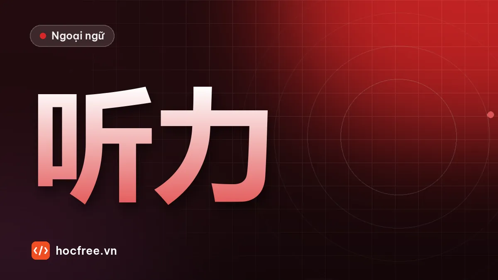

Luyện nghe HSK 3: đọc trước đáp án, bắt từ khóa, nghe chép
Đọc trước đáp án, đoán chủ đề, bắt từ chỉ thời gian, nơi chốn, phủ định, bẫy đồng âm khác thanh và quy trình nghe chép 15 phút mỗi ngày.

Học xong bài này, bạn sẽ
- Đọc trước đáp án và đoán nội dung
- Bắt từ khóa và nhận ra bẫy
- Luyện nghe chép đúng cách
Nên học trước: Luyện tập tổng hợp ngữ pháp HSK 3
Nội dung bài viết
Phần nghe là phần nhiều người Việt sợ nhất, vì tốc độ nói thật nhanh hơn nhiều so với lúc bạn tự đọc. Theo đề mẫu và các nguồn tổng hợp đề cương HSK 3.0, phần nghe HSK 3 mới có khoảng 30 câu, nghe câu hoặc hội thoại ngắn rồi chọn đáp án. Bài này dạy chiến thuật làm bài và quan trọng hơn: cách luyện nghe mỗi ngày để tai bạn thật sự nhanh lên.
Chiến thuật 1: đọc trước đáp án
Trước khi audio bắt đầu mỗi câu, bạn có vài giây. Dùng nó để đọc lướt 3 đáp án và đoán:
- Loại câu hỏi: đáp án là giờ (八点, 九点半) → câu hỏi về thời gian. Đáp án là nơi chốn (医院, 银行) → hỏi ở đâu. Đáp án là người (他妻子, 他同事) → hỏi ai.
- Từ khóa cần bắt: nếu đáp án là ba con số, hãy chú ý mọi con số được nói và cả từ thay đổi số (晚了半个小时, 提前十分钟).
Chiến thuật 2: bắt từ "đổi chiều"
Đề hay gài bẫy bằng cách nói một thông tin rồi sửa lại. Hãy dỏng tai với các từ:
| Từ | Tác dụng | Ví dụ |
|---|---|---|
| 可是 / 但是 | Thông tin quan trọng nằm sau | 我本来想去，可是太忙了。→ không đi |
| 不是…是… | Phủ định rồi đính chính | 不是星期三，是星期四。 |
| 本来 / 原来 | Kế hoạch ban đầu (thường đã đổi) | 本来八点开会，现在改到九点了。 |
| 没 / 还没 / 不 | Phủ định | 我还没吃呢。 |
| 已经 / 才 | Đã xong / mới chỉ | 他才来了十分钟。 |
Chiến thuật 3: cảnh giác từ đồng âm, gần âm
Những cặp dễ nghe nhầm: 买 mǎi – 卖 mài, 四十 sìshí – 十四 shísì, 起床 qǐchuáng – 汽车 qìchē, 已经 yǐjīng – 一定 yídìng, 睡觉 shuìjiào – 水饺 shuǐjiǎo. Đáp án bẫy thường chứa đúng từ bạn nghe thấy nhưng sai nghĩa. Đừng chọn chỉ vì "nghe thấy chữ đó".
Chiến thuật 4: câu hỏi về người nói
Với hội thoại nam – nữ, câu hỏi hay là: 男的/女的是什么意思？ (Người nam/nữ có ý gì?), 他们在哪儿？ (Họ đang ở đâu?), 他们是什么关系？ (Họ là quan hệ gì?). Hãy đoán từ từ khóa: 菜单, 服务员 → nhà hàng; 病人, 药 → bệnh viện; 经理, 会议 → công ty.
Cách luyện nghe mỗi ngày (15 phút)
- Nghe hiểu ý (3 phút): nghe một đoạn hội thoại 30–60 giây, chưa nhìn chữ. Viết ra 3 ý bạn nghe được.
- Nghe chép (7 phút): nghe từng câu, dừng, chép bằng chữ Hán (chữ chưa nhớ thì viết pinyin). Mỗi câu tối đa 3 lần.
- So transcript (3 phút): gạch đỏ chỗ sai. Phân loại: không biết từ, biết từ nhưng không nhận ra khi nghe, nghe nhầm thanh.
- Nhại theo (2 phút): đọc theo audio 2 lần, bắt chước tốc độ và ngữ điệu.
Nguồn audio có transcript: hội thoại trong giáo trình HSK chuẩn, đề mẫu chính thức, chương trình dành cho người học có phụ đề chữ Hán. Ưu tiên tốc độ hơi nhanh hơn mức bạn thấy thoải mái.
Lỗi loại "biết từ nhưng không nhận ra khi nghe" là dấu hiệu bạn học từ chỉ bằng mắt. Cách sửa: thẻ Anki phải có audio, và đọc to mỗi lần ôn.
Từ vựng hay gặp trong câu hỏi nghe
| Câu hỏi | Pinyin | Nghĩa |
|---|---|---|
| 他们最可能在哪儿？ | Tāmen zuì kěnéng zài nǎr? | Họ có khả năng đang ở đâu nhất? |
| 男的是什么意思？ | Nán de shì shénme yìsi? | Người nam có ý gì? |
| 女的为什么不去？ | Nǚ de wèi shénme bú qù? | Vì sao người nữ không đi? |
| 他们是什么关系？ | Tāmen shì shénme guānxi? | Họ có quan hệ gì? |
| 根据对话，可以知道什么？ | Gēnjù duìhuà, kěyǐ zhīdao shénme? | Theo hội thoại, có thể biết điều gì? |
Luyện tập 10 câu
Nhờ người đọc hoặc dùng công cụ đọc văn bản cho phần "Văn bản nghe", mỗi câu nghe 2 lần, không nhìn chữ.
1. Cuộc họp bắt đầu lúc mấy giờ? A. 8:00 B. 9:00 C. 9:30
2. Họ đang ở đâu? A. bệnh viện B. nhà hàng C. ngân hàng
3. Người nữ vì sao không đi? A. bị ốm B. phải tăng ca C. không thích
4. Cái áo giá bao nhiêu? A. 40 tệ B. 14 tệ C. 140 tệ
5. Người nam có ý gì? A. Đồng ý B. Muốn đổi ngày C. Không muốn đi
6. Họ có quan hệ gì? A. vợ chồng B. đồng nghiệp C. bác sĩ – bệnh nhân
7. Người nam đã làm việc ở đây bao lâu? A. 10 phút B. 1 năm C. 10 năm
8. Người nữ muốn làm gì? A. bán xe B. mua xe C. sửa xe
9. Hôm nay thời tiết thế nào? A. nắng B. mưa C. tuyết
10. Theo hội thoại, có thể biết gì? A. Báo cáo đã xong B. Báo cáo chưa xong C. Không có báo cáo
Văn bản nghe (chỉ người đọc được xem trước)
- 男：会议是八点开始吗？ 女：本来是八点，现在改到九点半了。
- 女：服务员，菜单。 男：好的，您想吃点儿什么？
- 男：晚上一起去唱歌吧！ 女：我很想去，可是今天要加班。
- 女：这件衣服多少钱？ 男：一百四十块。
- 女：我们星期六去爬山，怎么样？ 男：星期六我有事，星期天行吗？
- 女：你今天怎么回来得这么晚？ 男：公司开会了，对不起，老婆。
- 女：你在这家公司工作多长时间了？ 男：快十年了。
- 女：我的车太旧了，我想换一辆新的。
- 男：出门别忘了带伞，外边下雨了。
- 男：报告写完了吗？ 女：还差一点儿，下午能写完。
Xem đáp án
1C (本来 8 giờ, đã đổi) 2B 3B (可是 sau là lý do) 4C 5B 6A (老婆: vợ) 7C (快十年: gần 10 năm) 8B (换一辆新的: đổi xe mới) 9B 10B (还差一点儿: còn thiếu một chút).
Kiểm tra cuối bài
1. Làm gì trong vài giây trước khi audio phát?
2. Nghe thấy 本来, bạn nên chú ý điều gì?
3. Lỗi "biết từ nhưng không nhận ra khi nghe" sửa thế nào?
Xem đáp án
- Đọc lướt đáp án, đoán loại câu hỏi và từ khóa.
- Kế hoạch ban đầu thường đã thay đổi; thông tin đúng nằm ở phần sau.
- Thẻ từ có audio, đọc to khi ôn, nghe chép đều đặn.
Tổng kết và ôn tập
- Đọc trước đáp án; bắt từ đổi chiều 可是, 不是…是, 本来, 还没.
- Cảnh giác từ gần âm; đừng chọn đáp án chỉ vì nghe thấy chữ đó.
- Luyện mỗi ngày 15 phút: nghe ý, nghe chép, so transcript, nhại theo.
Bài tiếp theo: đọc hiểu đoạn văn ngắn.
Bài tập thực hành
- Làm 10 câu luyện nghe trong bài bằng cách nhờ người đọc hoặc dùng chức năng đọc văn bản, rồi chấm.
- Nghe chép 5 câu mỗi ngày trong 5 ngày từ một nguồn audio có transcript.
Làm xong bài tập mới chuyển sang bài tiếp theo: đọc to, tự viết chữ Hán và tự chấm đáp án là cách duy nhất để nhớ lâu.